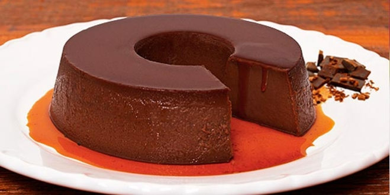

PUDIM DE CHOCOLATE

Ingredientes
- 1 lata de leite condensado
- 1 lata de creme de leite
- 400ml de leite
- 1 xícara de chá de chocolate em pó
- 1 pacotinho de gelatina sem sabor
- 7 colheres de sopa de água
Modo de Preparo
- Dissolva o pacotinho de gelatina nas 7 colheres de água, coloque no fogo ou no micro-ondas por 30 segundos
- Bata em um liquidificador o leito, o leite condensado, o creme de leite, o chocolate e a gelatina dissolvida
- Unte uma assadeira de furo no meio com manteiga
- Despeje a mistura na assadeira e leve a geladeira de 3 à 4 horas
- Por último é só se saborear!!!!